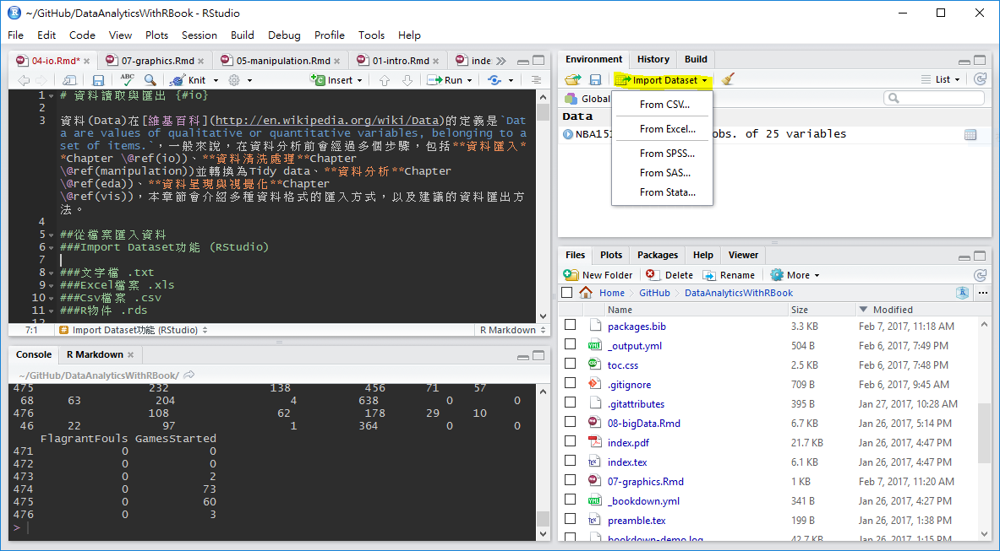
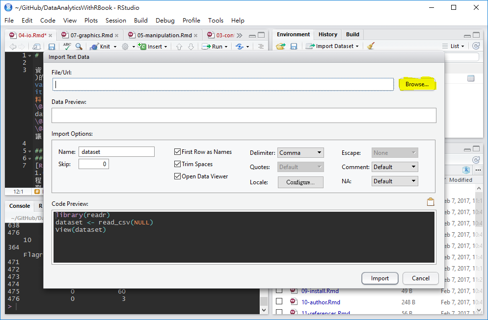
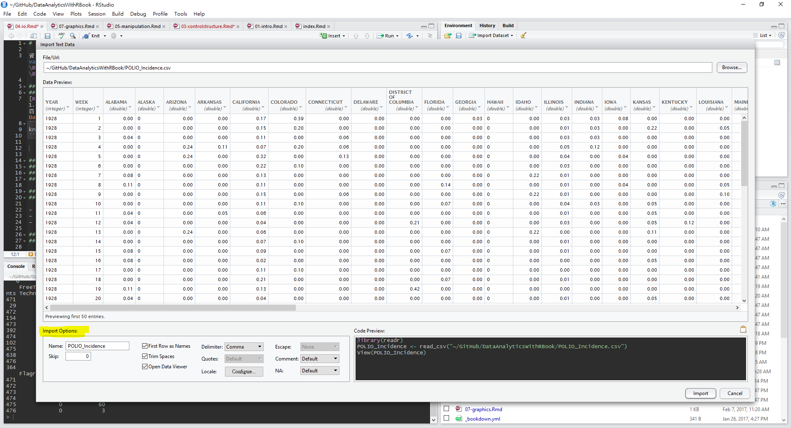

5 資料讀取與匯出
資料(Data)在維基百科的定義是values of qualitative or quantitative variables, belonging to a set of items.，一般來說，在資料分析前會經過多個步驟，包括資料匯入Chapter 5、資料清洗處理Chapter 6並轉換為Tidy data、資料分析Chapter 7、資料呈現與視覺化Chapter 8。
資料有多種可能來源，包括:
- 硬碟
- 網路下載
- Open Data (API)
- 網頁裡 (爬蟲！)
- 任何地方
以下介紹由檔案、網路等來源匯入多種資料格式的匯入方式，以及建議的資料匯出方法。
##從檔案匯入基本資料格式 {#file}
###Import Dataset功能 (RStudio)
RStudio 1.0版後即提供很好的資料匯入介面，使用者可以不用撰寫任何程式碼，就能完成.csv、Excel以及SAS等檔案匯入。首先選取RStudio四分割視窗右上角的Environment標籤，選擇Import Dataset，就會出現檔案格式的選項

以csv檔案為例，在選單中選取From CSV，選取後會跳出資料匯入輔助視窗，點選Browse按鈕開啟檔案選取器，並點選欲匯入之文字檔案

檔案選取後，資料匯入輔助視窗有預覽功能，供使用者檢查資料匯入方法是否正確，若需調整各項參數，可利用下方Import Options的選項微調，最常用的調整功能是Delimiter分隔符號與First Row as Names首列是否為欄位名稱。

如果要匯入的檔案為tab分隔文字檔，一樣可以選擇.csv選項，再修改Delimiter參數為Tab即可。
資料匯入輔助視窗右下方Code Preview:子視窗中會自動產生資料匯入程式碼，如果未來想再使用視窗匯入，希望透過程式碼匯入，可以將此段程式碼複製貼上到R程式碼檔案(.R)，供後續分析使用。
###分隔文字檔 .txt
readr (Wickham, Hester, and Francois 2018) package提供完整的文字檔讀取功能，各讀取函數的第一個參數通常為檔案路徑與名稱，read_delim()函數可用來讀取所有用分隔符號分隔的文字檔案，以tab分隔為例，只需將delim參數設定為\t，即可用tab將各欄位分開讀取。此外，col_names參數也常被使用，TRUE代表資料內有包含欄位名稱(通常在首列)，預設為TRUE，如果設定為FALSE，欄位名稱則會依順序被設定為 X1, X2, X3 …。
參數整理如下 (可用?read_delim指令閱讀官方說明)：
file, 檔名delim, 分隔符號quote, 把欄位包起來的符號escape_backslash, 預設FALSE，是否用/作為逃脫符號escape_double, 預設TRUE，是否用quote符號作為逃脫符號col_names, 是否有欄位名稱（表頭）（T/F）col_types, 每一個欄位的類別，用向量表示comment, 備註標示符號，在備註標示符號之後的文字不會被讀入skip, 要跳過幾行？
###CSV檔案 .csv {#csv}
readr (Wickham, Hester, and Francois 2018) package也提供CSV (逗號分隔)檔案的讀取功能，read_csv()
###Excel檔案 .xls
readxl (Wickham and Bryan 2019) package提供讀取Excel檔案 (xls, xlsx)的函數read_excel()，除了常用的col_names參數外，也可使用sheet參數設定要讀取的工作表(sheet)
###R物件 .rds
R物件有檔案小與讀取快速的優點，如果在R程式處理資料後必須儲存一份以供後續分析的話，使用R物件儲存是最佳的方式，讀取R物件有多種函數可供選擇，推薦使用readRDS()函數 (參考資料:A better way of saving and loading objects in R)
###R程式 .R
source, 讀R的Obejct or script, 執行, ASCII (dump的相反)
5.0.1 純文字資料 (無分隔)
readLines, 逐行讀取文字資料
###其他格式 透過載入套件，R可讀入許多其他格式的檔案:
- MySQL
RMySQL - HDF5
rhdf5 - Weka
foreign - Stata
foreign - SPSS
Hmisc - SAS
Hmisc - GIS
rgdal - Images
jpeg - Music
tuneR
5.0.2 其他讀檔注意事項
讀檔的時候R會自動
- 跳過#開頭的任何行（Row）
- 判斷要讀幾行
- 判斷每個列（Column）的類別
- 把欄位包起來的符號
如果讀取時已指定Column類別以及把欄位包起來的符號，讀取速度會快很多。
##從網路匯入資料 ### Open Data 開放資料 (Open data) 指的是一種經過挑選與許可的資料，這些資料不受著作權、專利權，以及其他管理機制所限制，可以開放給社會公眾，任何人都可以自由出版使用，不論是要拿來出版或是做其他的運用都不加以限制。Open data 運動希望達成的目標與開放原始碼、內容開放、開放獲取等其他「開放」運動類似。Open data 背後的核心思想由來已，但 Open data 這名詞直到近代才出現，拜網際網路崛起而為人所知，尤其是 Data.gov 等 Open data 政府組織的設立。(維基百科)
台灣政府從2011年開始大力推動開放政府與開放資料的概念，多個機關與縣市政府架設開放資料平台，供民眾擷取或再利用各項資料
Open Data常見的儲存方式為: CSVChapter ??、JSONChapter ??、XMLChapter 5.0.4，開放資料網站通常有提供民眾直接下載檔案的服務，針對可下載的CSV格式資料，可以下載完成後，透過上述由檔案匯入資料 Chapter ??方法匯入即可。
5.0.3 API (Application programming interfaces)
應用程式介面 Application programming interfaces (API) 通常是特定軟體、程序或系統，廠商或開發人員，為了能夠讓第三方的開發者可以額外開發應用程式來強化他們的產品，所推出可以與他們系統溝通的介面。(維基百科)
以下載Open Data為例，若檔案更新頻繁，使用手動下載相當耗時。如臺北市開放認養動物資料，更新頻率為每日，所以許多開放資料也提供透過API下載的服務，透過API下載的資料格式會是JSON格式Chapter ??，如臺北市開放認養動物API資訊所示，開放資料網站會提供資料集ID與資料RID
- 資料集ID: 紀錄資料的基本參數，如包含欄位、更新頻率等
- 資料RID: 資料集
並同時提供擷取範例，如果需要下載原始資料，可直接從範例複製貼上即可，如http://data.taipei/opendata/datalist/apiAccess?scope=resourceAquire&rid=f4a75ba9-7721-4363-884d-c3820b0b917c
###JSON格式檔案 {#json} JSON (Javascript Object Notation)是一種輕量級的資料交換語言 (Wiki)，特色如下:
- from application programming interfaces (APIs)
- JavaScript、Java、Node.js應用
- 一些NoSQL非關連型資料庫用JSON儲存資料：MongoDB
- 資料儲存格式
- Numbers (double)
- Strings (double quoted)
- Boolean (true or false)
- Array (ordered, comma separated enclosed in square brackets [])
- Object (unorderd, comma separated collection of key:value pairs in curley brackets {})
許多Open Data也用JSON格式儲存，例如臺北市開放認養動物資料，根據資料的API資訊，可得資料擷取網址http://data.taipei/opendata/datalist/apiAccess?scope=resourceAquire&rid=f4a75ba9-7721-4363-884d-c3820b0b917c 。
將JSON檔案匯入R可以使用jsonlite(Ooms 2020) package，套件使用前必須安裝，安裝套件方法請參考Chapter 1，載入後，可使用fromJSON()函數載入JSON資料。
如API網址為httr類別，需要載入httr(???) package，並使用GET()函數處理資料擷取網址。
PetData<-jsonlite::fromJSON("http://data.taipei/opendata/datalist/apiAccess?scope=resourceAquire&rid=f4a75ba9-7721-4363-884d-c3820b0b917c")
str(PetData)## List of 1
## $ result:List of 5
## ..$ limit : int 1000
## ..$ offset : int 0
## ..$ count : int 365
## ..$ sort : chr ""
## ..$ results:'data.frame': 365 obs. of 20 variables:
## .. ..$ AcceptNum : chr [1:365] "106060601" "106060401" "106060210" "106060207" ...
## .. ..$ IsSterilization: chr [1:365] "未絕育" "已絕育" "未絕育" "未絕育" ...
## .. ..$ Name : chr [1:365] "" "" "俊俊" "小莊" ...
## .. ..$ Variety : chr [1:365] "米克斯" "米克斯" "米克斯" "米克斯" ...
## .. ..$ Age : chr [1:365] "成年" "成年" "成年" "成年" ...
## .. ..$ ChildreAnlong : chr [1:365] "" "" "" "" ...
## .. ..$ Resettlement : chr [1:365] "臺北市動物之家 收容編號106060601" "" "臺北市動物之家 收容編號106060210" "臺北市動物之家 收容編號106060207" ...
## .. ..$ Sex : chr [1:365] "雄" "雌" "雄" "雄" ...
## .. ..$ Note : chr [1:365] "左剪耳 輕微脫水 精神食慾不佳" "" "嗨~~我的名字叫俊俊，希望帥氣的我可以受您的青睞，快來動物之家看看我吧!\n" "哈囉~我的名字叫小莊，目前我在動物之家生活，希望能快快找到，願意認養我的人來帶我回家!!\n" ...
## .. ..$ Phone : chr [1:365] "02-87913063" "" "02-87913062" "02-87913062" ...
## .. ..$ Reason : chr [1:365] "民眾不擬續養" "民眾不擬續養" "動物管制" "動物管制" ...
## .. ..$ ImageName : chr [1:365] "http://163.29.39.183/uploads/images/medium/c0f66294-143c-4406-8714-2e6764352b13.jpg" "http://163.29.39.183/uploads/images/medium/4ffa231f-3108-43c1-8ccf-b8578bdf1e1a.jpg" "http://163.29.39.183/uploads/images/medium/e68771df-747e-4544-846a-bdd6099e7f90.jpg" "http://163.29.39.183/uploads/images/medium/fd75d049-5310-4016-b1f4-71d69c4a9912.jpg" ...
## .. ..$ HairType : chr [1:365] "虎斑白" "黃白" "黃白" "黃" ...
## .. ..$ Build : chr [1:365] "中" "中" "中" "中" ...
## .. ..$ AnimalAnlong : chr [1:365] "" "" "" "" ...
## .. ..$ ChipNum : chr [1:365] "900073000086900" "900073000086481" "" "" ...
## .. ..$ _id : int [1:365] 1 2 3 4 5 6 7 8 9 10 ...
## .. ..$ Type : chr [1:365] "貓" "貓" "貓" "貓" ...
## .. ..$ Email : chr [1:365] "tcapoa8@mail.taipei.gov.tw" "" "tcapoa8@mail.taipei.gov.tw" "tcapoa8@mail.taipei.gov.tw" ...
## .. ..$ Bodyweight : chr [1:365] "" "" "" "" ...由資料結構可知，經過fromJSON()函數匯入的JSON檔案被轉存為列表list的型態，且在result元素中包含五個子元素(offset, limit, count, sort, results)，其中，results子元素的類別為資料框data.frame，內含開放認養動物清單，因此，可使用$符號截取元素與子元素
## AcceptNum IsSterilization Name Variety Age ChildreAnlong
## 1 106060601 未絕育 米克斯 成年
## 2 106060401 已絕育 米克斯 成年
## 3 106060210 未絕育 俊俊 米克斯 成年
## 4 106060207 未絕育 小莊 米克斯 成年
## 5 106060203 未絕育 好橙 米克斯 成年
## 6 106053107 未絕育 歐雅 米克斯 年輕
## Resettlement Sex
## 1 臺北市動物之家 收容編號106060601 雄
## 2 雌
## 3 臺北市動物之家 收容編號106060210 雄
## 4 臺北市動物之家 收容編號106060207 雄
## 5 臺北市動物之家 收容編號106060203 雄
## 6 臺北市動物之家 收容編號106053107 雌
## Note
## 1 左剪耳 輕微脫水 精神食慾不佳
## 2
## 3 嗨~~我的名字叫俊俊，希望帥氣的我可以受您的青睞，快來動物之家看看我吧!\n
## 4 哈囉~我的名字叫小莊，目前我在動物之家生活，希望能快快找到，願意認養我的人來帶我回家!!\n
## 5 嗨~我的名字叫好橙，害羞的我想要一個溫暖的家，您可以給我這個機會嗎?\n
## 6 大家好~我的名字叫歐雅，我的個性緊張，想帶我回家，要有耐心陪伴我渡過適應期唷!
## Phone Reason
## 1 02-87913063 民眾不擬續養
## 2 民眾不擬續養
## 3 02-87913062 動物管制
## 4 02-87913062 動物管制
## 5 02-87913062 動物管制
## 6 02-87913062 動物管制
## ImageName
## 1 http://163.29.39.183/uploads/images/medium/c0f66294-143c-4406-8714-2e6764352b13.jpg
## 2 http://163.29.39.183/uploads/images/medium/4ffa231f-3108-43c1-8ccf-b8578bdf1e1a.jpg
## 3 http://163.29.39.183/uploads/images/medium/e68771df-747e-4544-846a-bdd6099e7f90.jpg
## 4 http://163.29.39.183/uploads/images/medium/fd75d049-5310-4016-b1f4-71d69c4a9912.jpg
## 5 http://163.29.39.183/uploads/images/medium/2f750fef-b696-4595-8fbf-cc6adf8f72d5.jpg
## 6 http://163.29.39.183/uploads/images/medium/1c293e5e-99db-466e-a156-ff33fef368b4.jpg
## HairType Build AnimalAnlong ChipNum _id Type
## 1 虎斑白 中 900073000086900 1 貓
## 2 黃白 中 900073000086481 2 貓
## 3 黃白 中 3 貓
## 4 黃 中 4 貓
## 5 黃 中 5 貓
## 6 黑 中 6 貓
## Email Bodyweight
## 1 tcapoa8@mail.taipei.gov.tw
## 2
## 3 tcapoa8@mail.taipei.gov.tw
## 4 tcapoa8@mail.taipei.gov.tw
## 5 tcapoa8@mail.taipei.gov.tw
## 6 tcapoa8@mail.taipei.gov.twresults資料框中包含20個欄位，可以像分析資料框一樣，針對此資料框做分析，舉例來說，可分析各項開放認養理由出現次數
##
## 民眾不擬續養 民眾拾獲 動物救援 動物管制
## 28 50 23 109 155分析可知開放認養理由以動物管制與未填寫居多。
如果需要將資料框轉換成JSON檔案可以使用jsonlite package所提供的toJSON()函數。
## 'json' chr "[\n {\n \"Sepal.Length\": 5.1,\n \"Sepal.Width\": 3.5,\n \"Petal.Length\": 1.4,\n \"Petal.Width\":"| __truncated__5.0.4 XML 可延伸標記式語言
- Extensible markup language
- 描述結構化資料的語言
- 處理XML檔案是網頁Html爬蟲的基礎
- Components
- Markup 標記 - labels that give the text structure
- Content 內文 - the actual text of the document
- XML Wiki
Tags, elements and attributes
- Tags correspond to general labels
- Start tags
<breakfast_menu>,<price> - End tags
</breakfast_menu>,</price> - Empty tags
<line-break />
- Start tags
- Elements are specific examples of tags
<name>Belgian Waffles</name>
- Attributes are components of the label
<book category="web">
許多Open Data也用XML格式儲存，例如臺北市水質監測資訊。
5.0.4.1 XML 套件
如需將XML檔案匯入R中，需要安裝XML (Temple Lang 2020) package，使用xmlParse()函數將檔案匯入。若出現Error: 1: Unknown IO error2: failed to load external entity，是因為XML套件處理http轉https的功能的不好，載入httr套件後，先使用GET()功能取用網址，再放入xmlParse()就不會有問題。
library(XML)
library(httr)
waterQ <- xmlParse(GET("https://data.taipei/opendata/datalist/datasetMeta/download?id=961ca397-4a59-45e8-b312-697f26b059dc&rid=190796c8-7c56-42e0-8068-39242b8ec927"))完成資料讀取後，使用xpathSApply()函數搭配XPath語法取得指定標籤內的資料，依需求也可改用xpathApply()函數，差別在於xpathSApply()函數回傳的物件是Vector 向量
，而xpathApply()回傳的物件是List 列表。
## [1] "雙溪淨水場" "衛理女中"
## [3] "雙溪國小 " "華興加壓站"
## [5] "長興淨水場" "市政大樓"
## [7] "市議會" "捷運忠孝復興站"
## [9] "南港高工" "南港加壓站"## [1] "121.569433" "121.55231" "121.563886" "121.544384" "121.547873"
## [6] "121.563997" "121.561975" "121.54342" "121.607462" "121.616217"在xpathApply()與xpathSApply()函數中，第二個參數為XPath，XPath是XML路徑語言（XML Path Language），基於XML的樹狀結構，提供在資料結構樹中找尋節點的能力，XPath語法的邏輯，可參考W3C Schools或是Google搜尋相關中文教學，如lxml、XPath 常用語法。在此列舉幾個常用的語法:
// 子結點資料, 如所有連結標籤 //a
@ 屬性資料, 如所有連結標籤內的連結網址 //a/@href
5.0.4.2 xml2 套件
除了XML套件外，也可使用xml2(Wickham, Hester, and Ooms 2020)套件來處理XML格式的檔案，同樣使用臺北市水質監測資訊為例，首先透過read_xml()函數將XML檔案匯入：
library(xml2)
waterURL<-"http://data.taipei/opendata/datalist/datasetMeta/download?id=961ca397-4a59-45e8-b312-697f26b059dc&rid=190796c8-7c56-42e0-8068-39242b8ec927"
waterQ <- read_xml(waterURL)完成讀取後，使用xml_find_all()以及xml_text()函數取得指定標籤內的資料：
#取得所有"code_name"標籤內的資料
code_name_xml<-xml_find_all(waterQ, ".//code_name")
code_name<-xml_text(code_name_xml)
code_name[1:10]## [1] "雙溪淨水場" "衛理女中"
## [3] "雙溪國小 " "華興加壓站"
## [5] "長興淨水場" "市政大樓"
## [7] "市議會" "捷運忠孝復興站"
## [9] "南港高工" "南港加壓站"#取得各監測站的經度longitude
longitude_xml<-xml_find_all(waterQ, ".//longitude")
longitude<-xml_text(longitude_xml)
longitude[1:10]## [1] "121.569433" "121.55231" "121.563886" "121.544384" "121.547873"
## [6] "121.563997" "121.561975" "121.54342" "121.607462" "121.616217"以上兩種套件均可完成XML檔案的處理，可依喜好選擇幾喜歡的套件。
5.0.5 網頁爬蟲 Webscraping
由於不是每個網站都提供API，但網頁上卻有你想要分析的資料（像是ptt推文！？），除了人工複製貼上以外，也可以將網頁處理程式化，以程式化的方式擷取網頁資料就叫做網頁爬蟲（Webscraping）（Webscraping Wiki）。在R中可以直接把HTML檔案當作XML檔案處理分析，也可使用rvest(Wickham 2019a) package輔助爬蟲程式撰寫。
此外，網頁爬蟲可能耗費很多網頁流量和資源，所以在許多網站被視為非法行為，如果一次讀太多太快，很可能被鎖IP。
以長庚資管系網站為例，可直接逐行讀取 readLines()
## Warning in readLines(con): 於 'https://im.cgu.edu.tw/' 找到不完整的最後一列## [1] "<!DOCTYPE html>"
## [2] "<html lang=\"zh-tw\">"
## [3] "<head>"
## [4] "<meta http-equiv=\"Content-Type\" content=\"text/html; charset=utf-8\">"
## [5] "<meta http-equiv=\"X-UA-Compatible\" content=\"IE=edge,chrome=1\" />"或是使用XML工具分析擷取網頁 (XML package)，使用方法與XML檔案處理方法類似，搭配XPath語言，篩選所需資料
## list()## list()除了把HTML檔案當作XML處理外，rvest(Wickham 2019a) package是R語言中最常被使用的爬蟲套件，使用前一樣需要安裝與載入
載入rvest套件後，經由以下步驟進行網站解析：
- 使用
read_html(“欲擷取的網站網址”)函數讀取網頁 - 使用
html_nodes()函數擷取所需內容 (條件為CSS或xpath標籤) - 使用
html_text()函數處理/清洗擷取內容，留下需要的資料 - 使用
html_attr()函數擷取資料參數（如連結url）
YahooNewsurl="https://tw.news.yahoo.com/"
news_title = read_html(YahooNewsurl) %>% html_nodes(".tpl-title a") %>% html_text()
news_url = read_html(YahooNewsurl) %>% html_nodes(".tpl-title a") %>% html_attr("href")
Yahoo_news = data.frame(title = news_title, url=news_url)
head(Yahoo_news) title url
1 曾1妻5妾好風光 男星慘賣豪宅還債 /從1妻5妾的風光到變賣豪宅還債-網友噓雷洪：活該-091741737.html
2 美報告：美棄「一中」台灣更危險 /美報告-美拋棄-中-台灣處境更危險-081036215.html
3 藍色凍蕃薯！1張圖看寒流有多冷 /霸王級寒流再襲台-張圖看懂這波寒流有多強-101500692.html
4 他被妻子戴綠帽 對象竟是親弟弟 /他被妻子戴綠帽-對象竟是親弟弟-072010033.html
5 匆忙推出移民禁令 他後悔了 /匆忙推移民禁令-美國土安全部長表後悔-044517088.html
6 蔡政府對釣魚台態度 國民黨憂美日安保質變 /蔡政府對釣魚台態度-國民黨憂美日安保質變-160200179.html在html_nodes()、html_text()和html_attr()函數中，擷取條件的撰寫會因網頁語法不同而有差異，必須要使用Google Chrome開發工具等工具輔助觀察需要擷取資料的條件。以上述Yahoo新聞為例，需要擷取的資料所在HTML片段如下：
<ul class="tpl-title yom-list list-style-none" id="yui_3_9_1_1_1486568229946_2408">
<li class="list-story first" id="yui_3_9_1_1_1486568229946_2407">
<div class="txt" id="yui_3_9_1_1_1486568229946_2406">
<a href="/從1妻5妾的風光到變賣豪宅還債-網友噓雷洪：活該-091741737.html" class="title " data-ylk="pkg:96a0ca11-47bc-3100-81ad-0a288707f150;ver:60cdb126-ee0c-11e6-bb9b-8a777738a932;lt:i;pos:1;" data-rapid_p="1">曾1妻5妾好風光 男星慘賣豪宅還債</a>
<cite id="yui_3_9_1_1_1486568229946_2405">
<span class="provider" id="yui_3_9_1_1_1486568229946_2404">Yahoo奇摩娛樂新聞</span>
</cite></div></li>
....觀察上述程式碼可已發現新聞清單被包含在ul標籤下，且css class為tpl-title yom-list list-style-none，所以這邊可以使用第一個classtpl-title為篩選條件。CSS 標籤的意義可參考W3C Schools的教學{target="_blank"}。在此整理常用的語法：
- CSS Selector 常見語法 參考資料
- .xxx：select elements with class=“xxx”
- #xxx：select elements with id=“xxx”
- [yyy]：select elements with attribute yyy
- [yyy=zzz]：select elements with attribute yyy=“zzz”
網頁爬蟲需要多做觀察與練習，才可熟知篩選技巧。
其他爬蟲相關參考資源:
- 網路爬蟲實作 - 用 r 語言打造自己的爬蟲程式
- rvest GitHub
- R Bloggers 有很多 爬蟲範例（英文）
- Ptt爬蟲實作
- 大數學堂 網頁爬蟲課程
- 搭配結巴中文斷詞的使用範例
5.1 Facebook資料擷取
在2018年的風波後，Graph API若要用在爬取公開粉專，須經過FB審核
Facebook提供Graph API，讓應用程式可透過API讀取與寫入 Facebook相關資料，Graph API會根據篩選條件，回傳JSON格式的資料。除此之外，Facebook還提供Graph API Explorer，讓程式開發人員可以測試資料撈取方法和結果。 在開始使用Graph API之前，必須要取得自己的access token (存取權杖)，Graph API Explorer工具提供Get Token按鈕(通常在視窗右上角)，可以讓開發者在不用新增應用程式(Application)的情況下取得暫時的access token。
有關Facebook access token的詳細介紹，可參考官方文件
5.1.1 Graph API in R
library(httr)
token<-"your token" #將access token複製到此處
FBData = GET(
paste0("https://graph.facebook.com/v2.8/tsaiingwen?fields=posts%7Bmessage%7D&access_token=",
token))
names(FBData)## [1] "url" "status_code" "headers" "all_headers" "cookies" "content" "date"
## [8] "times" "request" "handle" ## [1] "posts" "id"## [1] "data" "paging"[[1]]
[[1]]$message
[1] "「國機國造」不是夢想，而是一個行動。今天啟動的高級教練機「自研自製」任務，是國防自主的重要里程碑。我們不只要讓戰機起飛，更要讓產業起飛。\n\n國防產業同樣是「5+2」關鍵產業之一，所以，除了要如期、如質完成新式高教機的「自研自製」外，也要重新厚植台灣的航太工業人才鏈，以及加強相關產業的連結、轉型和升級。\n\n國防自主沒有捷徑，只有努力再努力、堅持再堅持。今天，我們重新跨出歷史性的一步。"
[[1]]$id
[1] "46251501064_10154006497451065"
[[2]]
[[2]]$message
[1] "今天，智慧機械推動辦公室正式啟動。「落實產學合作」、「支持創新研發」、「強化行銷通路」是辦公室的三項重點任務。\n\n智慧機械是「5+2」關鍵產業的其中之一。政府有決心。我相信，所有的機械業者－無論做的是螺桿、刀庫、控制器或是工作母機，大家也都有很強的決心，要走向創新、走向智慧化、走向品牌。我們是一個團隊，我們一起加油！"
[[2]]$id
[1] "46251501064_10154006456601065"
[[3]]
[[3]]$message
[1] "今天來向台商拜個晚年。我也邀請台商朋友們，共同參與台灣經濟轉型升級的世紀工程。\n\n無論是擴大對國內的投資，或者配合新南向政策，前進海外深耕佈局，我期待跟台商朋友們一起努力，群策群力，克服困難和瓶頸，為台灣經濟發展打開全新的局面。"
[[3]]$id
[1] "46251501064_10154001652641065"
##[1] "「國機國造」不是夢想，而是一個行動。今天啟動的高級教練機「自研自製」任務，是國防自主的重要里程碑。我們不只要讓戰機起飛，更要讓產業起飛。\n\n國防產業同樣是「5+2」關鍵產業之一，所以，除了要如期、如質完成新式高教機的「自研自製」外，也要重新厚植台灣的航太工業人才鏈，以及加強相關產業的連結、轉型和升級。\n\n國防自主沒有捷徑，只有努力再努力、堅持再堅持。今天，我們重新跨出歷史性的一步。"5.1.2 Rfacebook package
在2018年的風波後，Graph API若要用在爬取公開粉專，須經過FB審核
除了直接使用Graph API外，也可使用Rfacebook(Barbera et al. 2017) package來讀取Facebook資料。
以下為使用Rfacebook取得 tsaiingwen 粉絲頁的資料範例：
5 posts from_id from_name
1 46251501064 蔡英文 Tsai Ing-wen
2 46251501064 蔡英文 Tsai Ing-wen
3 46251501064 蔡英文 Tsai Ing-wen
4 46251501064 蔡英文 Tsai Ing-wen
5 46251501064 蔡英文 Tsai Ing-wen
message
1 「國機國造」不是夢想，而是一個行動。今天啟動的高級教練機「自研自製」任務，是國防自主的重要里程碑。我們不只要讓戰機起飛，更要讓產業起飛。\n\n國防產業同樣是「5+2」關鍵產業之一，所以，除了要如期、如質完成新式高教機的「自研自製」外，也要重新厚植台灣的航太工業人才鏈，以及加強相關產業的連結、轉型和升級。\n\n國防自主沒有捷徑，只有努力再努力、堅持再堅持。今天，我們重新跨出歷史性的一步。
2 今天，智慧機械推動辦公室正式啟動。「落實產學合作」、「支持創新研發」、「強化行銷通路」是辦公室的三項重點任務。\n\n智慧機械是「5+2」關鍵產業的其中之一。政府有決心。我相信，所有的機械業者－無論做的是螺桿、刀庫、控制器或是工作母機，大家也都有很強的決心，要走向創新、走向智慧化、走向品牌。我們是一個團隊，我們一起加油！
3 今天來向台商拜個晚年。我也邀請台商朋友們，共同參與台灣經濟轉型升級的世紀工程。\n\n無論是擴大對國內的投資，或者配合新南向政策，前進海外深耕佈局，我期待跟台商朋友們一起努力，群策群力，克服困難和瓶頸，為台灣經濟發展打開全新的局面。
4 「快了」！雞年通機捷，等待很值得。大年初四，我來看看機場捷運通車前的準備，也坐捷運到中壢，跟鄉親拜年問好。
5 雞年初三發福袋\n\n臺中豐原慈濟宮、彰化溪湖福安宮、雲林北港朝天宮、嘉義九華山地藏庵
created_time type
1 2017-02-07T08:02:45+0000 photo
2 2017-02-07T07:18:00+0000 photo
3 2017-02-05T07:12:52+0000 photo
4 2017-01-31T08:37:42+0000 photo
5 2017-01-30T11:41:07+0000 photo
link
1 https://www.facebook.com/tsaiingwen/photos/a.390960786064.163647.46251501064/10154006497206065/?type=3
2 https://www.facebook.com/tsaiingwen/photos/a.390960786064.163647.46251501064/10154006455396065/?type=3
3 https://www.facebook.com/tsaiingwen/photos/a.390960786064.163647.46251501064/10154001652641065/?type=3
4 https://www.facebook.com/tsaiingwen/photos/a.390960786064.163647.46251501064/10153989357181065/?type=3
5 https://www.facebook.com/tsaiingwen/photos/a.390960786064.163647.46251501064/10153987089121065/?type=3
id likes_count comments_count shares_count
1 46251501064_10154006497451065 2013 125 43
2 46251501064_10154006456601065 2217 163 57
3 46251501064_10154001652641065 9416 920 163
4 46251501064_10153989358051065 34116 1574 373
5 46251501064_10153987095776065 20592 665 269由於每次擷取資料的比數有上限（大概是30筆左右），如果需要取得更多更長期的資料，就要使用迴圈協助，分批取得資料，透過設定 since 和 until參數，可設定資料擷取區間。
首先先取得日期向量，供後續迴圈做使用
lastDate<-Sys.Date()
DateVector<-seq(as.Date("2017-01-01"),lastDate,by="5 days")
DateVectorStr<-as.character(DateVector)
DateVectorStr## "2017-01-01" "2017-01-06" "2017-01-11" "2017-01-16" "2017-01-21" "2017-01-26" "2017-01-31" "2017-02-05"利用上述日期向量資料，搭配迴圈，依序設定since 和 until參數
totalPage<-NULL
token<-'your token'
numberOfPost<-30
for(i in 1:(length(DateVectorStr)-1)){
tempPage<-getPage("tsaiingwen", token,
since = DateVectorStr[i],until = DateVectorStr[i+1])
totalPage<-rbind(totalPage,tempPage)
}
nrow(totalPage)## 4 posts 8 posts 10 posts 3 posts 2 posts 14 posts 1 posts
## [1] 42Rfacebook Packages提供其他函數可供使用
- getUsers()
- getPost()
- searchFacebook()
- Check https://github.com/pablobarbera/Rfacebook
5.2 資料匯出
在R中完成資料處理後，有多種匯出選擇，如果是要匯出供他人在其他環境(如Excel)使用，建議匯出成tab分隔的文字檔(.txt)或是逗號分隔的文字檔(.csv)；但若是要在R的環境繼續使用，建議匯出成R物件 (.rds)，除了可保留欄位型別設定外，讀取速度與檔案大小皆優於文字檔案。
5.2.1 文字檔 .txt
使用write.table()函數寫入檔案，需要參數有
x要匯出的檔案，通常為matrix或是data.frame格式file檔案名稱appendT/F TRUE表示在檔案後端加入文字，F表示直接覆蓋原始檔案 (預設F)quote是否需要用雙引號將字串包起 (預設T)sep分隔符號 (預設空白)eol換行符號na表示空值的字串dec小數點表示法row.namesT/F 是否需要輸出row namescol.namesT/F 是否需要輸出column namesqmethod逃脫字串設定fileEncoding編碼設定
References
Barbera, Pablo, Michael Piccirilli, Andrew Geisler, and Wouter van Atteveldt. 2017. Rfacebook: Access to Facebook Api via R. https://CRAN.R-project.org/package=Rfacebook.
Ooms, Jeroen. 2020. Jsonlite: A Robust, High Performance Json Parser and Generator for R. https://CRAN.R-project.org/package=jsonlite.
Temple Lang, Duncan. 2020. XML: Tools for Parsing and Generating Xml Within R and S-Plus. https://CRAN.R-project.org/package=XML.
Wickham, Hadley. 2019a. Rvest: Easily Harvest (Scrape) Web Pages. https://CRAN.R-project.org/package=rvest.
Wickham, Hadley, and Jennifer Bryan. 2019. Readxl: Read Excel Files. https://CRAN.R-project.org/package=readxl.
Wickham, Hadley, Jim Hester, and Romain Francois. 2018. Readr: Read Rectangular Text Data. https://CRAN.R-project.org/package=readr.
Wickham, Hadley, Jim Hester, and Jeroen Ooms. 2020. Xml2: Parse Xml. https://CRAN.R-project.org/package=xml2.